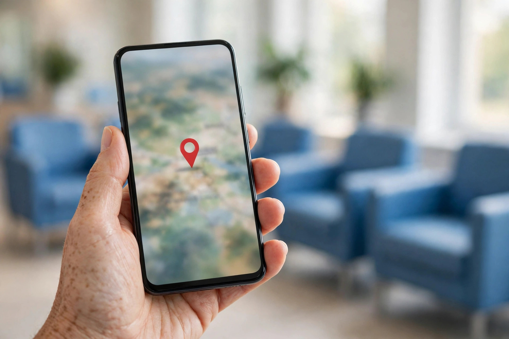

When someone in Karor Lal Eason needs a clinic, a pharmacy, a diagnostic service or another everyday service, the search is often urgent and always trust based. A parent with a sick child, a patient needing a regular medicine, or a family looking for a reliable service before an event will search on Google, glance at timings and reviews, and call the place that looks dependable. This article explains SEO for clinics, pharmacies and everyday services in Karor Lal Eason, with the care this kind of work requires.
Zaheer Seo Expert is based in Layyah and has no office in Karor Lal Eason. We provide SEO for clinics and services here from Layyah, online and by phone. Our SEO services for Karor Lal Eason businesses describes the support available, and everything in this article follows one rule: health and essential services must be described honestly, without claims that cannot be stood behind.
Accuracy Is a Form of Care
For a clinic or pharmacy, a wrong detail online is not a small mistake. Wrong hours can send a patient to a closed door at night. A wrong phone number can delay urgent help. An inaccurate pin can waste the minutes a family does not have. The first SEO task for any such business is therefore simple and serious: make the Google profile completely accurate, and keep it accurate whenever timings, duty arrangements or contact numbers change.
- Show real opening hours, and update them for holidays and changed schedules.
- Use the phone number that is genuinely answered for enquiries.
- Place the map pin exactly at the entrance patients should use.
- List the services you actually provide, in plain words patients use.
The Google Business Profile optimization guide explains how to set and maintain these details correctly.

Describe Services the Way Patients Search for Them
Patients do not search in medical textbook language. They search for the problem, the test, the treatment or the type of practitioner, usually with the town name or near me. A clinic profile and website should therefore describe services in clear, everyday terms alongside correct names: consultations, common tests available, pharmacy availability, or the everyday services a practice genuinely offers. Never list services you do not provide to attract searches; a patient misled once will not return, and the review they leave will warn others.
The same plain language approach applies to other everyday services in town: repair services, tailoring, salons, computer and mobile services, educational support and similar trades. People search for the task they need done. Businesses that name those tasks clearly on their profiles and pages are the ones Google can match. Our local SEO and Google Business Profile service is built around describing real services in the customer's own words.
Reviews for Services Need Extra Sensitivity
Reviews matter greatly for clinics and services because trust is the whole decision. Invite honest feedback in a general way, for example a small notice suggesting patients may share their experience on Google, and reply to reviews with gratitude and discretion. Never discuss a patient's condition or treatment in a public reply, never confirm details about any individual, and never pressure anyone for a positive review. A calm, private minded response to criticism, inviting the person to contact you directly, protects both the patient and your standing.

Photos and Information That Reassure
Clean, real photos help a nervous patient choose you: the front of the clinic or pharmacy, the signboard, the waiting or service area kept tidy, and the entrance a first time visitor must find. On a website, honest information also reassures: who provides the service, what to bring, how appointments or walk ins work if applicable, and how to reach you in an urgent situation within your real arrangements. Write only what is true today, and update it when it changes.
For pharmacies, clarity about being a pharmacy, your location and your hours is the core need; avoid publishing medical advice or claims beyond your role. For all services, the principle is identical: help the customer understand, arrive and contact you without confusion.
Everyday Services Compete on Being Found First
Karor Lal Eason has several providers for many everyday needs, and customers often choose between them on small signals: who appeared first, whose hours were clear, whose reviews sounded genuine, whose number connected. You cannot control emergencies, but you can control whether your business is the clear, complete and honest result when the search happens. That quiet reliability is what local SEO builds, week after week.
Zaheer Seo Expert helps clinics, pharmacies and service businesses in Karor Lal Eason build exactly that presence, working from Layyah as the Karor Lal Eason location page explains, and our general article on SEO for Karor Lal Eason businesses gives the wider picture. In work like yours, people are not just customers. Make it easy for them to find you, and make everything they find true.
Frequently Asked Questions
What is the most important online detail for a clinic?
Accuracy. Real hours, an answered phone number and a correct map pin matter more than anything else, because patients may be travelling urgently or at night based on what your listing says.
How should a clinic describe its services online?
In plain, honest words patients actually search with, alongside correct service names. List only services you genuinely provide, and update the list whenever your arrangements change.
How should clinics handle Google reviews?
Invite general honest feedback, reply with gratitude and discretion, and never discuss any individual patient or treatment publicly. Invite unhappy reviewers to contact you directly.
Is the SEO provider based in Karor Lal Eason?
No. Zaheer Seo Expert is based in Layyah and has no office in Karor Lal Eason. Clinics and services there are supported online and by phone from Layyah.
Want More Customers From Google?
Call 0327 7350830 or email seozaheer14@gmail.com. Zaheer Seo Expert, Layyah - Rajan Shah Road, Rana Nagar, Chak 116 TDA, Pakistan. Open 24 hours.
Get Your SEO Strategy →